One of the most common and most versatile representations of discrete geometry is that of a triangular mesh. They are used e.g. in computer graphics and for discretizing domains when solving physics problems using computers, though the triangulation method presented here is ill fit for that particular task.
A classical problem is that of finding a triangulation of a simple polygon in 2D and in this post I will describe a method for doing exactly this. A link to a python implementation of the method can be found at the bottom of this page.
Finding a triangulation of a two dimensional polygon might be used when rendering it as a graphical object, which can have applications both in scientific visualization for artistic drawings and other types of illustrations, or for filling flat holes in a triangulated surface mesh in 3D or as a step in some larger algorithm.
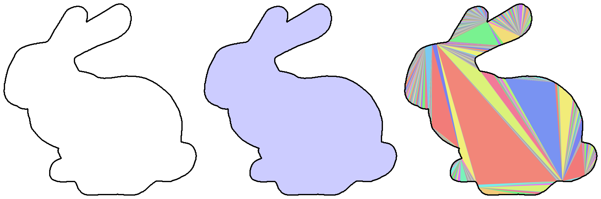
I remember when I first stumbled upon this problem a few years ago. I was given data of a delineated organ contour for a 3D MRI image. The contours, like the images, where given slice by slice so that the 3D delineation was represented by a set of 2D polygons.
Then I toyed with the idea of using these delineations to create a watertight 3D surface mesh, just to visualize it, and in order to do this one would have to connect all the polygons in adjacent layers from top to bottom in order to form triangles to close it on the sides and triangulate the flat 2D polygons at the bottom and at the top!
I never tested this particular way of forming a surface mesh and I suspect that for a simple 3D shape it could be quite straightforward but if it is allowed to have a more non-trivial topology this task could quickly become much more involved. A simpler way of doing this, that is also very robust, is to mark all the voxels inside the contours and then use the iso-surface of the image mask in 3D to extract a surface mesh, e.g. using the marching cubes algorithm.
However I found this method to solve part of the problem but then I never actually implemented or tested it until just before I wrote this!
This blog post and my implementation is based on the description given in [Eberly2002]
A polygon is an ordered set of points, also called vertices, that have an x and a y-coordinate, . Two consecutive vertices are connected by an edge and the list loops around so that the first and the last vertices are also connected by an edge.
A simple polygon is one where every vertex is connected to two edges only and edges only intersect at vertices.
We also want the polygon to be consistently oriented, so we can say that it has an inside and an outside.
Below we have one example of a simple polygon, Figure 2 and two non-simple ones, Figure 3 and Figure 4. The first non-simple one has more than two edges connected to and the second has edge intersections that don't lie at vertex positions.
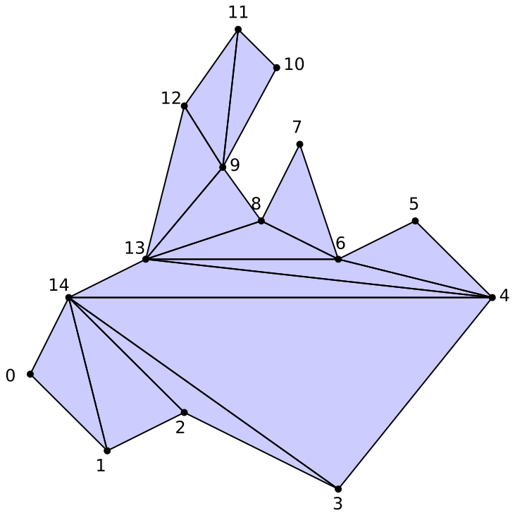
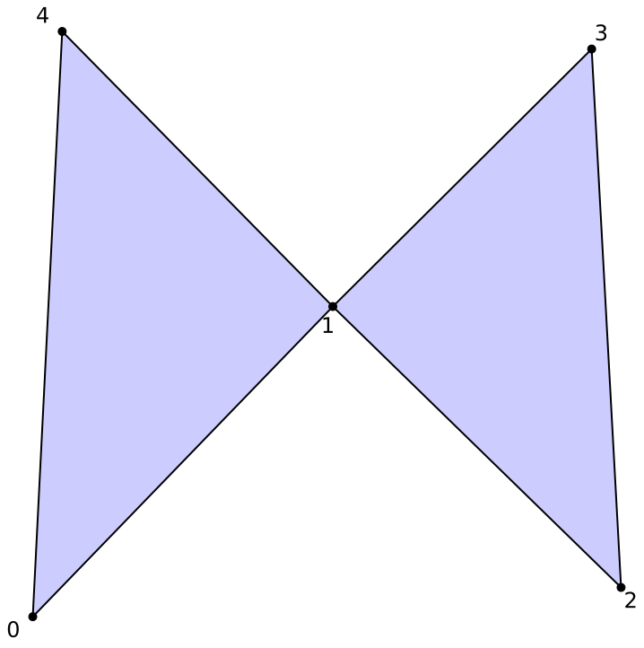
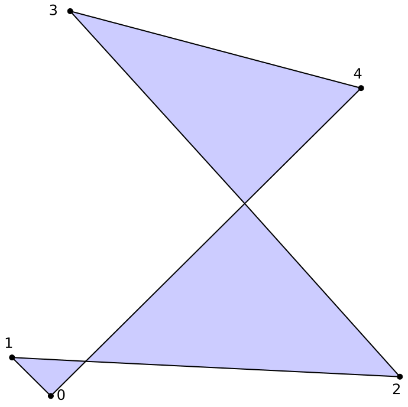
As the name implies the algorithm works by identifying ears and then clipping them. An ear is a set of three consecutive vertices where the ear tip, , is locally convex, i.e the angle on the inside of the polygon between the two edges and is less than or equal to 180° and further that no other vertex of the polygon lie inside this triangle.
Once such a set of three vertices is identified they are recorded as forming one triangle and the vertex is removed from the polygon. This is done until the polygon contain no more than two vertices at which point it has been fully triangulated.
The removal of the vertex is done efficiently and effortlessly using a double linked list.
The double linked list is a data structure consisting of an ordered list of nodes where each node contains one value, in our example a vertex, and a reference to the node before it and the one after it. The list loops around so that the last element connects to the first and vice-versa.
We start with a list of all vertices in our polygon, in the same order as they appear, . Then we start testing each consecutive triplet to see if they form an ear.
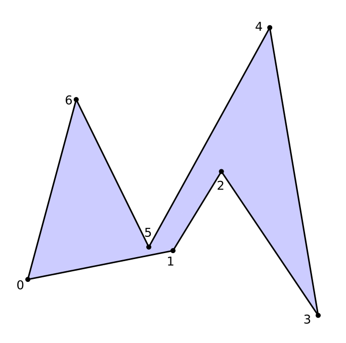
The first triplet, , the red triangle in Figure 6, is not an ear. Its internal angle is actually less than 180° but unfortunately it has inside of it. The same goes for the next triplet, , which also has inside, Figure 7.
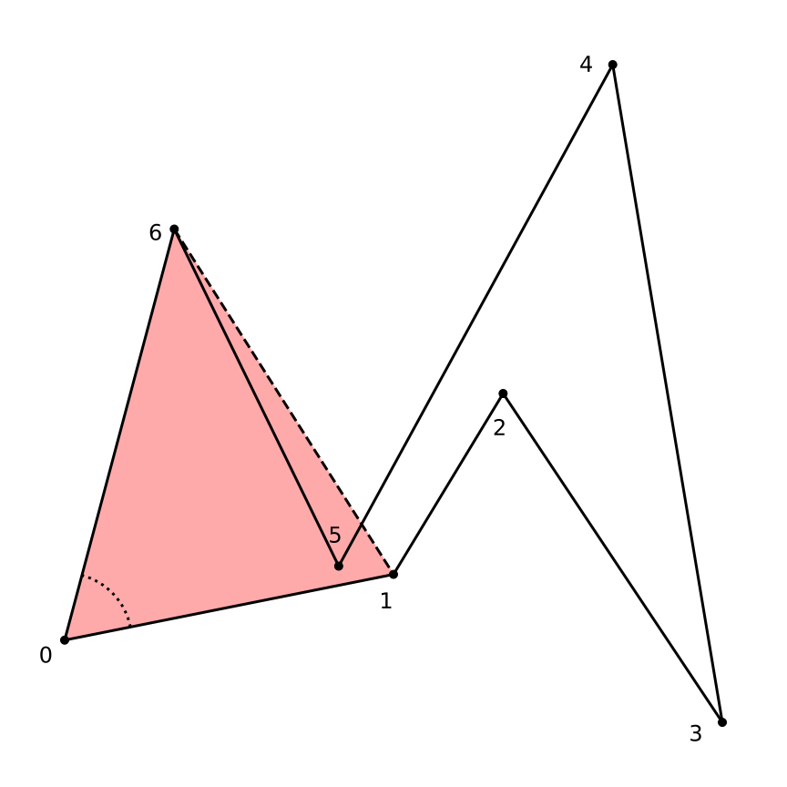
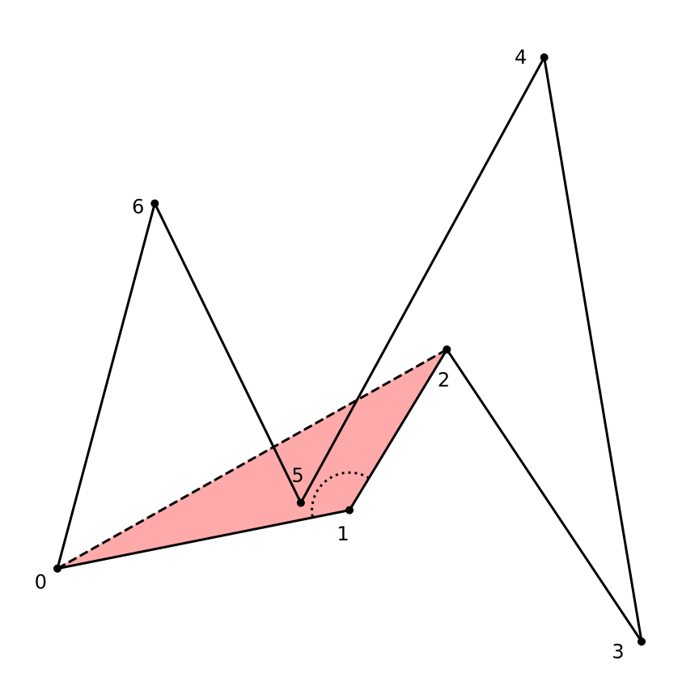
The third triplet, in Figure 8, forms a triangle without any other vertices on its inside but it has an interior angle larger than 180° so it is not locally convex. This can be seen as the red triangle formed by the triplet lies outside of the polygon.
Finally when we examine the triplet we see that it has no other vertices inside of it and that the interior angle is indeed not larger than 180° and so this triplet is an ear, see the blue triangle in Figure 9. We store this triplet as one of the triangles of our triangulation, remove the tip of the ear, , from our list so that we now have , Figure 10, and then continue this process until only two vertices are left in and we have a complete triangulation of the original polygon. The final result can be seen in Figure 11.
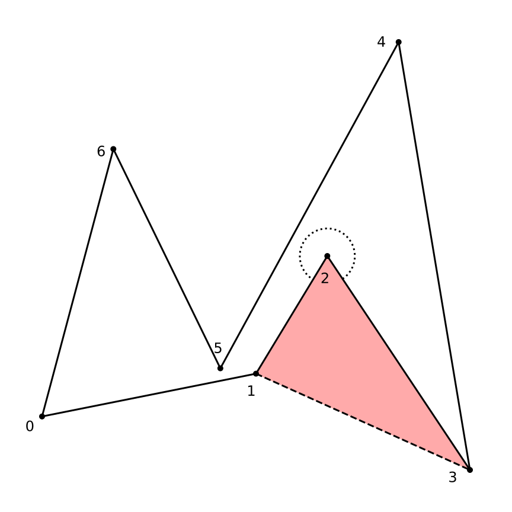
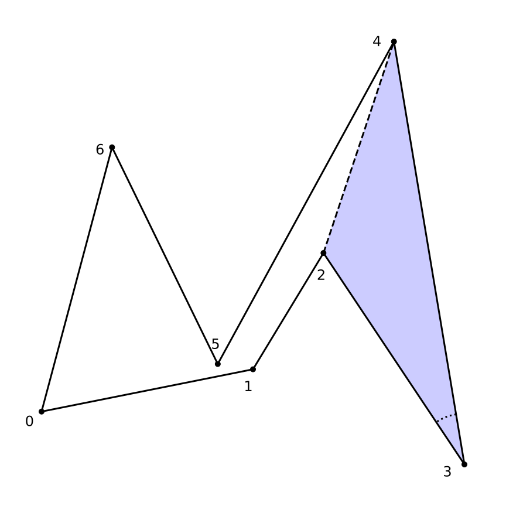
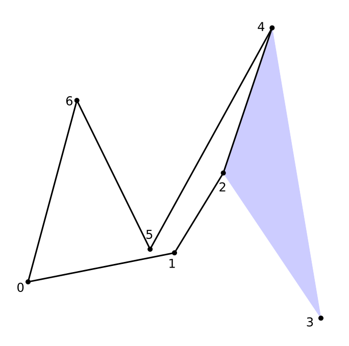
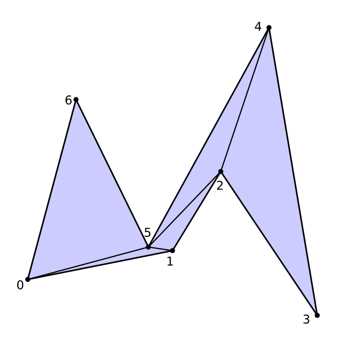
These three code sections contain the main functionality of the ear clipping triangulation. We iterate over our list of vertices until only two remains, test if triplets of vertices make up an ear and if so we store this as a triangle and remove the tip of the ear, i.e. the mid vertex in the triplet, from the list and continue.
def triangulate(vertices):
"""
Triangulation of a polygon in 2D.
Assumption that the polygon is simple, i.e has no holes, is closed and
has no crossings and also that its vertex order is counter clockwise.
"""
n, m = vertices.shape
indices = np.zeros([n-2, 3], dtype=np.int)
vertlist = DoubleLinkedList()
for i in range(0, n):
vertlist.append(i)
index_counter = 0
# Simplest possible algorithm. Create list of indexes.
# Find first ear vertex. Create triangle. Remove vertex from list
# Do this while number of vertices > 2.
node = vertlist.first
while vertlist.size > 2:
i = node.prev.data
j = node.data
k = node.next.data
vert_prev = vertices[i, :]
vert_current = vertices[j, :]
vert_next = vertices[k, :]
is_convex = isConvex(vert_prev, vert_crnt, vert_next)
is_ear = True
if is_convex:
test_node = node.next.next
while test_node!=node.prev and is_ear:
vert_test = vertices[test_node.data, :]
is_ear = not insideTriangle(vert_prev,
vert_current,
vert_next,
vert_test)
test_node = test_node.next
else:
is_ear = False
if is_ear:
indices[index_counter, :] = np.array([i, j, k], dtype=np.int)
index_counter += 1
vertlist.remove(node.data)
node = node.next
return indicesTwo methods are used here to determine if a vertex is an ear or not. The first one tests if the vertex is locally convex by calculating the angle between its two edges.
def angleCCW(a, b):
"""
Counter clock wise angle (radians) from normalized 2D vectors a to b
"""
dot = a[0]*b[0] + a[1]*b[1]
det = a[0]*b[1] - a[1]*b[0]
angle = np.arctan2(det, dot)
if angle<0.0 :
angle = 2.0*np.pi + angle
return angle
def isConvex(vertex_prev, vertex, vertex_next):
"""
Determine if vertex is locally convex.
"""
a = vertex_prev - vertex
b = vertex_next - vertex
internal_angle = angleCCW(b, a)
return internal_angle <= np.piThe second tests if a vertex is inside a triangle by first computing its barycentric coordinates and . Then we check if they are within the valid range for these parametric values to represent a point inside the triangle.
def insideTriangle(a, b, c, p):
"""
Determine if a vertex p is inside (or "on") a triangle made of the
points a->b->c
http://blackpawn.com/texts/pointinpoly/
"""
#Compute vectors
v0 = c - a
v1 = b - a
v2 = p - a
# Compute dot products
dot00 = np.dot(v0, v0)
dot01 = np.dot(v0, v1)
dot02 = np.dot(v0, v2)
dot11 = np.dot(v1, v1)
dot12 = np.dot(v1, v2)
# Compute barycentric coordinates
denom = dot00*dot11 - dot01*dot01
if abs(denom) < 1e-20:
return True
invDenom = 1.0 / denom
u = (dot11*dot02 - dot01*dot12) * invDenom
v = (dot00*dot12 - dot01*dot02) * invDenom
# Check if point is in triangle
return (u >= 0) and (v >= 0) and (u + v < 1)The Koch snowflake, [Wikipedia],is a fractal curve and one of the more common ones you can encounter as an example visualization or just of fractal curves themselves. An example is for the python library [Matplotlib] where it is used to demonstrate what I have also illustrated here, namely how to draw filled polygonal shapes. The Koch snowflake is constructed by starting with an equilateral triangle and then recursively altering the edges in the following fashion.
First each edge is divided into three equally sized edges.
An equilateral triangle is then drawn outward, using the new smaller edge in the middle as base.
Lastly, the edge used for the base is removed.
Where we originally had one edge on the curve we now have four. So after the first iteration, starting with three edges, we have 12 and this number rapidly grows for each iteration.
In Figure 12 you can see how the ear clipping algorithm triangulates the resulting polygon. Random colors for triangles are generated using the method described by Martin Ankerl in [Ankerl2009].
An improvement to the algorithm I did not investigate is to support polygons with holes. The holes are defined as other simple polygons that lie completely inside the first one. The polygon inside should be oriented in clockwise direction so that our notion of inside and outside is consistent.
A connecting edge is created from the outside polygon to the inside. We also duplicate the vertices of this edge and then split the edge into two so that we now have an edge going in to the inner polygon and then on that goes back out.
Further, this can be done recursively in order to split a polygon with several topological layers of sub polygons and sub-sub polygons so that it can be triangulated.
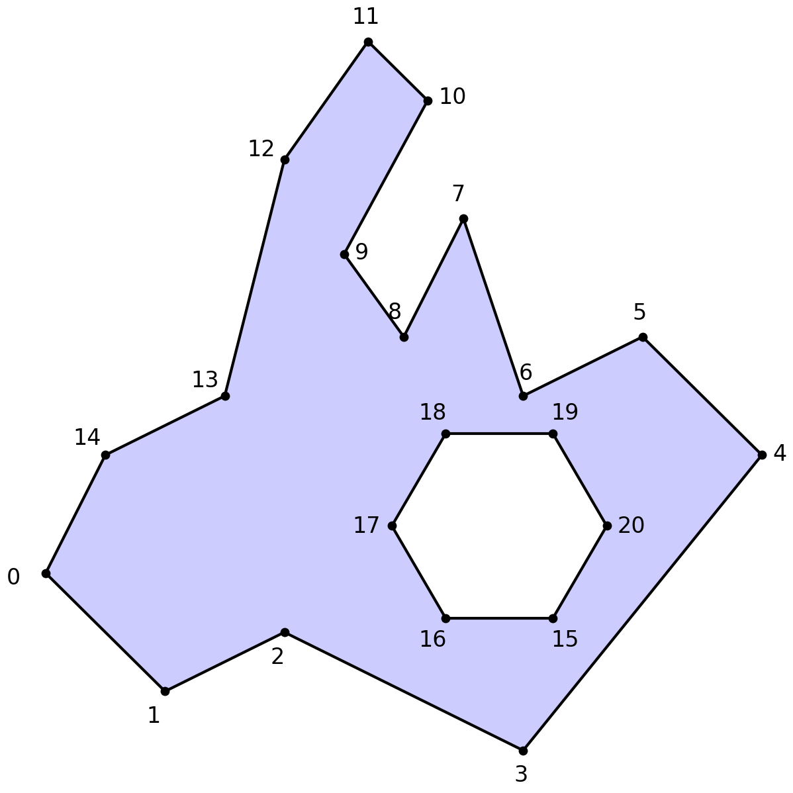
The algorithm presented here is . This can be seen as we basically check every candidate ear, three consecutive vertices, against every other vertex in the remaining polygon to see so that none lies inside this triplets triangle. This implementation is without most of the improvements mentioned in [Eber2002], the slightly improved algorithm presented there uses four lists of vertices that are maintained simultaneously. One contains the vertices of the current polygon, one only convex vertices, one so called reflex vertices and one ear tip vertices which improves the lookup of ear candidates and speed ups the tests.
It is also mentioned that algorithms exist and that a more involved method with linear time exists as well [Chazelle1991]. Further, a randomized algorithm, allegedly less involved, also with is presented by [Amato2001].
Bibliography:
Code for all figures and examples:
https://bitbucket.org/nils_olovsson/ear_clipping_triangulation/src/master/